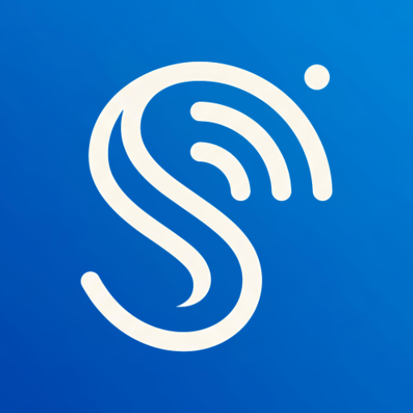
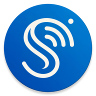

A single-stroke S that resolves into three broadcast arcs, cream on a cobalt gradient (#1565C0 → #1E88E5). Use the supplied asset at 28px radius or as the round variant. The repo ships no SVG, no wordmark and no monochrome lockup — where a wordmark is needed, set StreamFolio in Roboto Black at the primary colour.